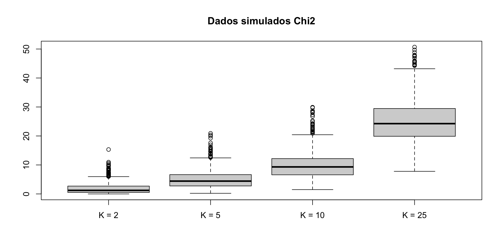

Inferência Causal
Rerandomização e ajuste de regressão
ctrucios@unicamp.br
Instituto de Matemática, Estatística e Computação Científica (IMECC),
Universidade Estadual de Campinas (UNICAMP).
Introdução
Introdução
- Estratificação e pós-estratificação são duais para covariável discreta no planejamento e análise de experimentos randomizados.
- Mas como lidar com covariáveis multidimensionais e/ou contínuas?
- Categorizar poderia ser uma respostas mas √© longe de ser uma solu√ß√£o √≥tima üòû.
- Rerandomizar e juste de regressão são o caminho a seguir üòÑ.
| Planejamento | Análise | |
|---|---|---|
| Covariável Discreta | Estratificação | Pós-estratificação |
| Covariável Geral | Re-randomizar | Ajuste de regressão |
Rerandomizar
Rerandomizar
Considere uma polulação com \(n\) unidades experimentais, das quais \(n_1\) recebem o tratamento e \(n_0\) o controle e seja \(\textbf{Z} = (Z_1, \cdots, Z_n)\) o vetor indicador de tratamento.
Para cada \(i\), seja \(X_i \in \mathbb{R}^K\) o vetor de covariáveis (discretas ou contínuas). Então, \(\textbf{X}_{n \times K} = (X_1, \cdots, X_n)'\) que, por simplicidade, vamos assumir com média zero.
Sob CRE, a diferença de médias das covariáveis, \[\hat{\tau}_X = n_1^{-1} \displaystyle \sum_{i = 1}^n Z_i X_i - n_0^{-1}\sum_{i = 1}^n (1- Z_i) X_i,\] tem \(\mathbb{E}(\hat{\tau}_X) = 0\)
Embora um CRE equilibra as covariáveis nos grupos de controle e tratamento. O valor realizado de \(\hat{\tau}_X\) é frequentemente \(\neq 0\), resultando em um indesejado desbalanceamento.
Rerandomizar
A distância de Mahalanobis \[M = \hat{\tau}_X' \Big (\underbrace{\dfrac{n}{n_1n_0}S^2_X}_{\mathbb{Cov}(\hat{\tau}_X)} \Big )^{-1}\hat{\tau}_X,\] com \(S^2_X = (n - 1)^{-1} \displaystyle \sum_{i = 1}^n X_i X_i',\) mede a diferença entre os grupos de tratamento e controle.
Lema
\(M\) permanece o mesmo se transformamos \(X_i\) em \(b_0 + B X_i\) para todas as unidades \(i = 1, \cdots, n\), em que \(b_0 \in \mathbb{R}^K\) e \(B \in \mathbb{R}^{K \times K}.\)
Rerandomizar
O TCL para populações finitas garante que, sob CRE e para valores grandes de \(n\), \(M \sim \chi^2_K.\)
Assim, \(M\) pode ter valores realizados grandes, afinal, o PGD tem média \(K\) e variância \(2K\).
Rerandomizar
- Rerandomizar evita o desvalanceamento das covariáveis.
- Isto e feito descartando as alocações de tratamento (\(\textbf{z}\)) nas quais \(M\) é grande.
- Formalmente:
Definição (ReM): Rerandomizaçao utilizando a distância de Mahalanobis (\(M\))
Selecione \(\textbf{Z}\) de um CRE e aceite este sss \[M \leq a,\] para algum valor predeterminado de \(a > 0.\)
Como escolher a?
Uma prática comúm é escolher \(a\) como algum quantil superior da \(\chi^2_K\).
Rerandomizar
Como analisar dados sob ReM?
- Sempre podemos utilizar FRT, desde que simulemos \(\textbf{Z}\) sob a restrição de que \(M \leq a\) (Morgan e Rubin, 2012).
- Não temos propriedades em amostras finitas sem assumir a hipótese nula forte, mas temos alguns resultados assintóticos que nos ajudarão a testar a hipótese nula fraca.
Notação
Seja \(L_{K,a} \sim D_1 | \textbf{D}'\textbf{D} \leq a,\) em que \(\textbf{D} = (D_1, \cdots, D_K) \sim N_K(0, I)\) e seja \(\varepsilon \sim N(0,1)\), então \(L_{K, a}\) e \(\varepsilon\) são independentes
Rerandomizar
Teorema
Sob ReM com \(M \leq a\), quando \(n \rightarrow \infty\) e se as condições (1)–(3) acontecem, então \[\hat{\tau} - \tau \sim \sqrt{\mathbb{V}(\hat{\tau})} \Big \{\sqrt{R^2}L_{K,a} + \sqrt{1 - R^2}\varepsilon \Big \},\] em que \(\mathbb{V}(\hat{\tau}) = \dfrac{S^2(1)}{n_1} + \dfrac{S^2(0)}{n_0} - \dfrac{S^2(\tau)}{n}\) e \(R^2 = \mathbb{C}or^2(\hat{\tau}, \hat{\tau}_X)\) (sob CRE).
Condições:
- \(n_1/n \rightarrow k_1\) e \(n_1/n \rightarrow k_2\) com \(0 \leq k_1, k_0 < \infty\).
- \(\{X_i, Y_i(1), Y_i(0), \tau_i \}\) tem variância finita.
- \(\max_{1 \leq i \leq n} \{Y_i(1)-\bar{Y}(1) \}^2 \rightarrow 0\), \(\max_{1 \leq i \leq n} \{Y_i(0)-\bar{Y}(0) \}^2 \rightarrow 0\) e \(\max_{1 \leq i \leq n} X_i'X_i / n \rightarrow 0\).
- Quando \(a = \infty\), \(\hat{\tau}- \tau \sim \sqrt{\mathbb{V}(\hat{\tau})}\varepsilon\).
- Quando \(a = 0\), \(\hat{\tau}- \tau \sim \sqrt{\mathbb{V}(\hat{\tau})(1 - R^2)}\varepsilon\).
Rerandomizar
Quando \(0<a<\infty\), a distribuição de \(\hat{\tau}\) é bem mais complexa mas é mais concentrada em \(\tau\). Assim, \(\hat{\tau}\) é mais preciso sob ReM do que sob CRE.
Observação: Se ignorarmos o ReM e ainda utilizamors o intervalo de confiança baseado na fórmula de variância de Neyman (1923) e na aproximação Normal, este será excessivamente conservador e cobre \(\tau\) mesmo se os efeitos individuais forem constantes.
Ajuste de regressão
Ajuste de regressão
FRT ajustado por covariável
As covariáveis \(\textbf{X}\) são todas fixas e, sob \(H_{0F}\), os resultados observados também são fixos. Assim, podemos simular a distribuição de qualquer test \(T = T(\textbf{Y}, \textbf{Z}, \textbf{X})\) e calcular p-valores. A ideia central do FRT continua a mesma na presença de covariáveis.
Ajuste de regressão
Duas formas de abordar o problem são as seguintes:
Definição: estratégia de pseudo-resultado
Podemos construir a estatística de testes baseados nos residuos (\(\hat{\varepsilon}\)) do modelo ajustado (considerando \(\textbf{Y}\) como variável dependente e \(\textbf{X}\) como independentes) e utilizar os resíduos como o pseudo-resultado para construir o teste.
Definição: estratégia da “saida” do modelo (model-output)
Podemos ajustar o modelo (considerando \(\textbf{Y}\) como variável dependente e \(\textbf{X}\) e \(\textbf{Z}\) como independentes) para obter o coeficiente de \(\textbf{Z}\) e utilizá-lo como estatística de teste.
Um dos modelos ajustados mais utilizados é regressão linear, mas nada impede que outras abordagens tais como regressão logística ou mesmo modelos de machine learning sejam utilizados.
Ajuste de regressão
Os seguintes métodos focam na estiação do efeito médio causal, \(\tau\)
ANCOVA
- Fisher (1925) propõe ANCOVA para melhorar a eficiência.
- A ideia básica é ajustar um modelo de regressão por MQO, \[y_i = \beta_0 + \beta_1 z_i + \beta_2 x_{i1} + \cdots, \beta_{k+1} x_{ik} + u,\] e considerar \(\hat{\beta}_1\) como um estimador para \(\tau\), que será denotado aqui por \(\hat{\tau}_F\).
Ajuste de regressão
Freedman
David Freedman reanalisou ANCOVA sob o olhar dos resultados potenciais e encontrou o seguinte:
- \(\hat{\tau}_F\) é viesado mas a simple diferença de médias, \(\hat{\tau}\), é não viesado.
- A variância assintótica de \(\hat{\tau}_F\) pode ser ainda maior do que a de \(\hat{\tau}\) quando \(n_1 \neq n_0\).
- O erro padrão do MQO é inconsistente para o verdadeiro erro padrão de \(\hat{\tau}\) sob CRE.
Lin
Winston Lin na sua tese doutoral (2013), respondeu a algumas das críticas do Freedman e econtrou o seguinte:
- O vies de \(\hat{\tau}_F\) é pequeno em grandes amostras a quando \(n \rightarrow \infty\), o vies \(\rightarrow 0\).
- A eficiência assintótica de \(\hat{\tau}_F\) pode ser melhorada utilizando o coeficiente de \(Z_i\) resultante da regressão de \(\textbf{Y}\) sob \((1, \textbf{Z}, \textbf{X}, \textbf{Z} \times \textbf{X})\), denotaremos o estimador por \(\hat{\tau}_L\). Além disso, o erro padrão EHW é um estimador conservador do verdadeiro erro padrão de \(\hat{\tau}_L\) sob CRE.
- O erro padrão EHW para \(\hat{\tau}_F\) ( regressão de \(\textbf{Y}\) sob \((1, \textbf{Z}, \textbf{X})\)) é um estimador conservador para o verdadeiro erro padrão de \(\hat{\tau}_F\)
Lin e SRE
Lin e SRE
Pode ser o caso de termos um SRE, estratificado numa variável discreta \(C\) e também termos outras covariáveis \(X\). Se todos os estratos são grandes, podemos obter um estimador de Lin como \[\hat{\tau}_{L,S} = \displaystyle \sum_{k = 1}^K \pi_{[k]} \hat{\tau}_{L,[k]},\] e um estimador (conservador) de \(\mathbb{V}(\hat{\tau}_{L,S})\) dado por \[\hat{V}_{L,S} = \displaystyle \sum_{k = 1}^K \pi_{[k]}^2 \hat{V}_{EHW, [k]}\]
Referências
- Peng Ding (2023). A First Course in Causal Inference. Capítulo 6.
- Morgan, K. L., & Rubin, D. B. (2012). Rerandomization to improve covariate balance in experiments.

Carlos Trucíos (IMECC/UNICAMP) | ME920/MI628 - Inferência Causal | ctruciosm.github.io